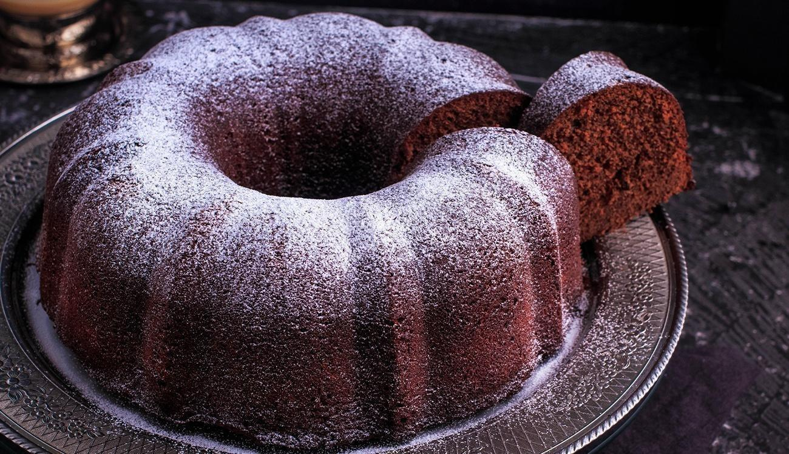

Arroz de Couve-Flor

- Arroz
- Couve-Flor
- Cebola Média
- Azeite
Deixe a couve-flor picada.
Adicione os ingredientes e
refogue bem. Adicione sal,
tampe a panela e deixe
cozinhar
Bolo de Café

- Farinha de Trigo
- Açúcar
- Café Coado
- Chocolate em pó
- Ovos
Bata o açúcar, as gemas e o
café. Adicione farinha e
chocolate e mexa bem. Bata
as claras e junte à mistura
Coxinha de Brigadeiro

- Leite Condensado
- Chocolate em pó
- Manteiga
- Morango
- Chocolate Granulado
Junte o leite condensado,
chocolate em pó e manteiga.
Aqueça no fogo baixo.
Envolva os morangos e passe
no granulado